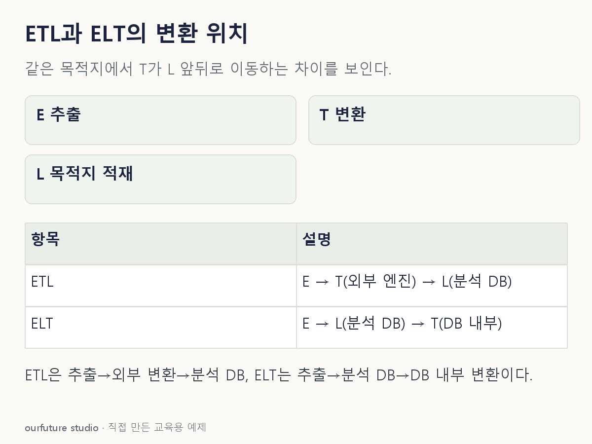

조건을 바꾸며 확인하기
단일 주된 변환의 위치를 묻는 자체 예시다. 속도·비용·보안 우월성이나 실제 파이프라인 실행 결과가 아니다.
설명 그림과 비교하기
아래 그림과 표는 고정된 설명 예제입니다. 기본·변형 중 어떤 조건인지 캡션을 읽고, 바꾼 입력의 결과는 계산 칸에서 확인하세요.

같은 문제를 직접 골라 보기
목적지는 분석 DB다. 원본을 분석 DB에 적재한 뒤 그 DB 안에서 값을 정리한다.
조건을 더 바꾸면?
원본을 외부 처리 엔진에서 정리한 뒤 분석 DB에 적재하도록 바꾸면?
변형 풀이 확인
ETL이다.
같은 목적지를 기준으로 변환이 적재보다 앞으로 이동했다.
목적 저장소에 넣기 전 변환인지, 넣은 뒤 변환인지.